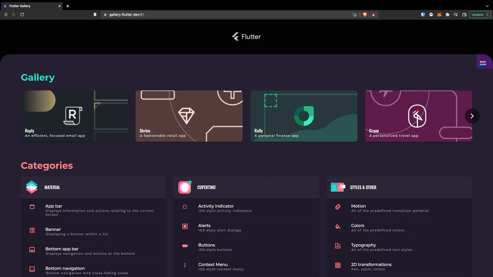
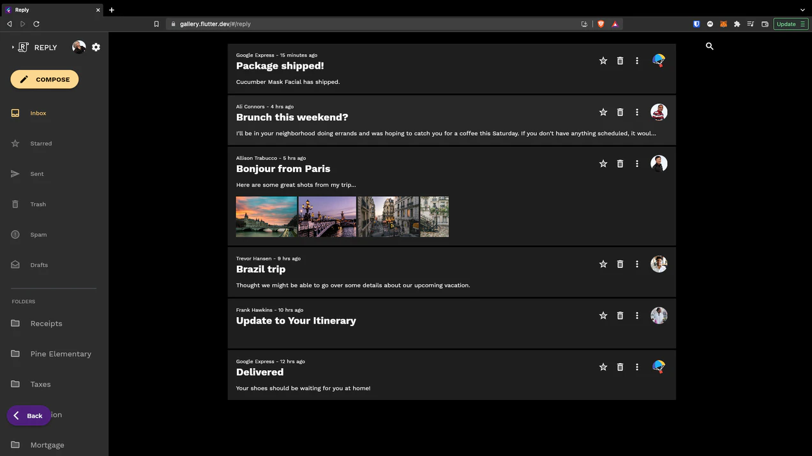
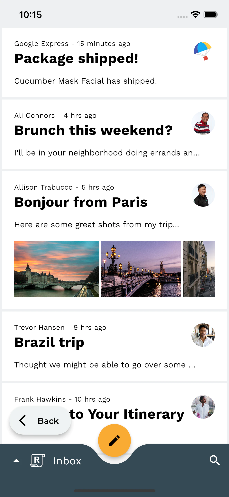
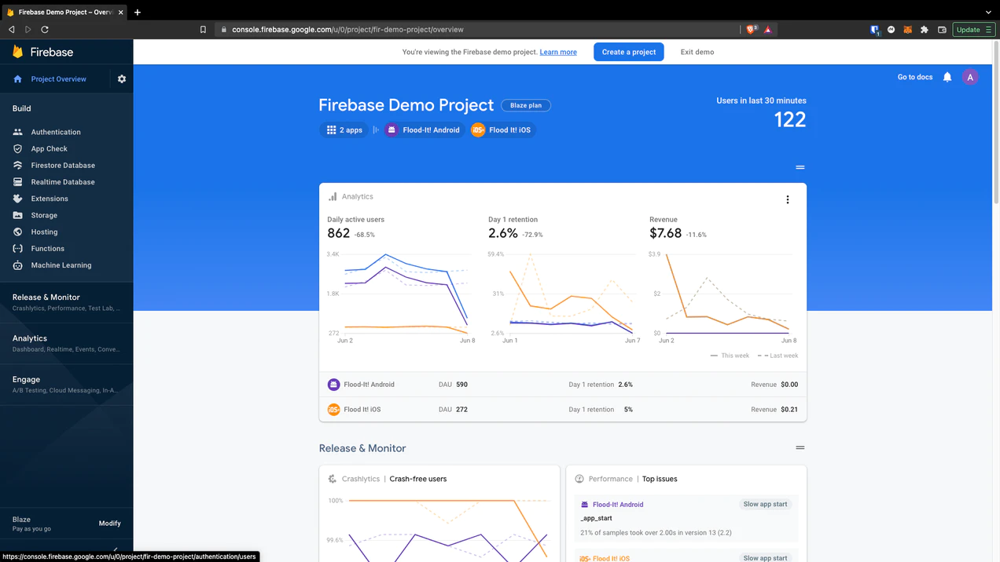
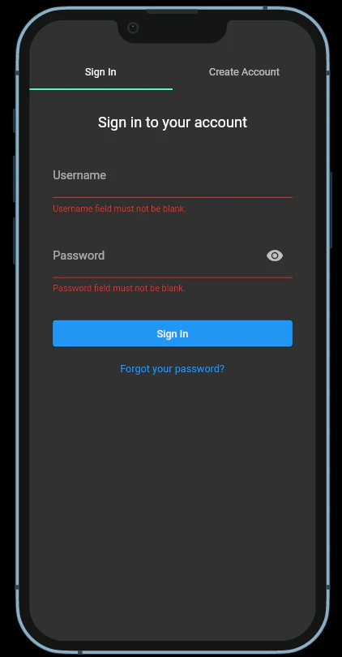
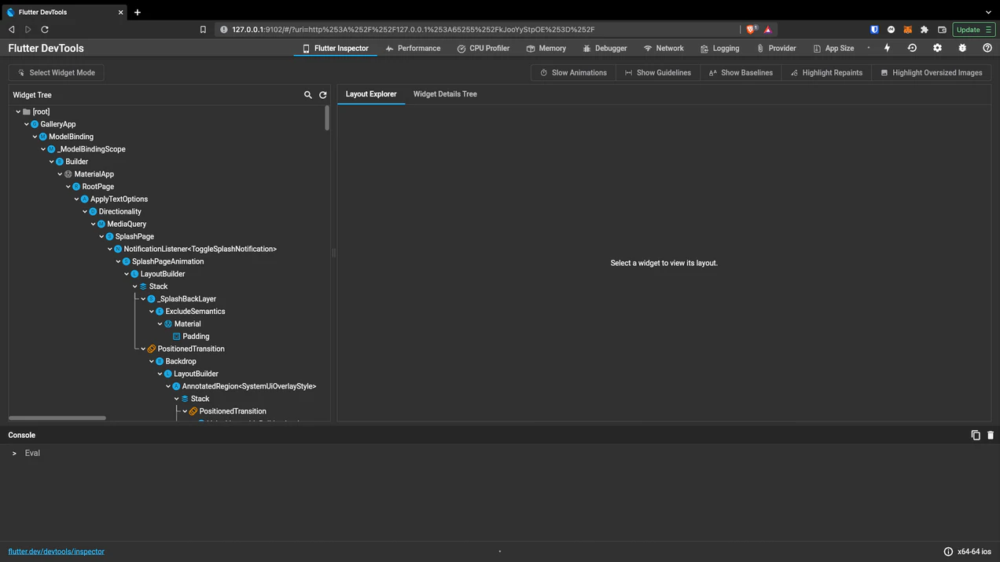

Shoutout to all of the Flutter maintainers and contributors

This past May, Flutter 3 was quietly released. It is now possible to write apps for iOS, Android, macOS, Linux, Windows, and the Web... with a single codebase.
While many JavaScript frameworks such as React and Angular have had success going a mile deep and a foot wide, it appears Flutter has begun by going a mile wide and is on its journey to go miles deep.
I have dipped my toes into many disciplines of software engineering: I've helped build real-time embedded systems, distributed systems, server-less architectures, smart contracts, and web/mobile applications. Using Flutter for the past 18 months has been one of the most seamless and fun developing experiences I have had — and I was a card-carrying front-end development hater.
Here is why I think every startup and new project should be building their apps with Flutter.
First, What is Flutter?
For those that are unfamiliar:
“Flutter is an open source framework by Google for building beautiful, natively compiled, multi-platform applications from a single code base.” (Source)
Flutter uses the Dart language, which I hadn't heard of before Flutter. For those coming from Javascript, Dart will come easy. For those coming from something like C or C++, everything is easy…
Why use Flutter?
The more languages, libraries, and frameworks I learn the more I know that there's way too much to learn. While this feeling will never go away, there is a few reasons why I keep coming back to Flutter after trying to convince myself that I should learn something else:
Obviously, because it's cross platform:
Even if you think your app only needs to be on one platform, why not reserve the right to easily add more with minimal updates to your codebase and ui design? It is worth repeating that this sentiment applies to iOS, Android, macOS, Windows, and even embedded IOT devices. Adapting to device changes and screen sizes is simpler than ever. There are even out-of-the-box widgets capable of handling it automatically.
In Flutter, finding the screen size is as simple as:
MediaQuery.of(context).size;
It can't be overstated how important this built-in adaptability can be. The cost and communication difficulties of maintaining multiple teams under one design system far outweighs the cost of learning one intuitive and powerful framework.
For those starting projects asking, “Why should I learn Flutter?” I counter: Why should you learn Javascript, HTML, CSS, React, React Native, and Swift?
Easy to Pick Up
Anyone who has tried coding knows that often, more time is spent setting up environments and troubleshooting downloads than actually building. Flutter makes setup extremely easy.
The getting started guide is straightforward and leaves you with a basic working application.
There is also myriad sample applications written by the community, with real functionality, to act as starting points. My favorite sample is Flutter Gallery. It contains a library of sample elements and themes, and even a few sample app UIs:
You can view it on the web, or clone the repository and run it on an iOS/Android simulator to see how the code can adapt to different screens and themes. I recommend shrinking your window horizontally to see how the app automatically responds.
One of the Flutter Gallery a Sample applications is Reply, an email inbox. This is the app on a web browser:
This is the same app, running the same code, now on an iPhone (in light mode):

All developers have to do is check the screen size, and change the layout accordingly in a simple if-else.
It also merits mention that the VSCode plugins for dart/Flutter are far better than my experience with other languages. They can even automatically place brackets and semicolons (hey C++ devs…).
Beautiful out-of-the-box ui Widgets
Flutter comes out-of-the-box with great looking widgets from Material ui that are easy to theme and customize. This takes away the headache of things like navigation, scrolling, animation, layout, and googling “how to center a div,” for the thousandth time. Devs can spend almost all of their time on core business logic.
There is also easy access to widgets native to iOS and macOS which make it possible to build apps that look as if Apple themselves designed them.
Check out the Flutter Widget Catalog to see all that's possible.
There is additionally a growing library of community-built packages that extend this. Just go to pub.dev and search or explore different packages. Here are a few of my favorites so far:
- Image Picker: choose images from your phone's photo library to use in the app
- Google Maps Flutter: easily integrate google maps into your app
- Animations: pre-built animations
- intl: easily add internationalization to your app
- riverpod: manage state as global variables, without the risk of using global variables
- Crypto: implementations of common hashing and encryption algorithms
- Firebase Auth: easily add identity to your app, with optional providers such as Google, Facebook, Apple
Cloud Integration
As the ecosystem grows, so does the support for common cloud providers. On Google, Firebase allows quick access to authentication, a noSQL storage solution, analytics, functions, push notifications, ads, and more. Starting with Flutter 3.0 Firebase is fully supported in Flutter. The Firebase Console has great tools for app management, testing, deployment, hosting, and analytics (if you choose to add spyware to your app).
Similarly, AWS Amplify gives builders a modular solution for adding powerful services like Cognito User pools, Lambda functions, Appsync, Cloudformation, and S3 Storage to Flutter apps. They even have prebuilt ui components for authentication:

For reference, here is all of the code required for the above login screen:
Authenticator(
initialStep: AuthenticatorStep.signIn,
child: MaterialApp(
builder: Authenticator.builder(),
home: const Scaffold(
body: Center(
child: Text('You are logged in!'),
),
),
),
);
(source)
It's Fast
Flutter is fast. It's fast to develop. It's fast to run. It's fast to ship. The hot reload feature allows you to reload the app when you make changes and maintain state. Flutter compiles into ARM, Intel, and even Javascript in the case of the web. That means that regardless of your target system, the Dart code that you write will be optimized for the processor at the time of build — similar to how Python compiles into C.
The developer tools additionally allow granular inspection of the ui tree, app state, performance statistics, memory usage and more:
Why not use Flutter?
Functionality Risk
What if you really need functionality, and the space is not yet mature enough to have built it? The good news is that the Flutter community is growing and there are constantly new functionalities and packages. It's also easy to extend and write functionality yourself.
Google Risk
Developers around for long enough know Google has a history of killing beloved projects. While possible, it's a good sign that Flutter just had a major release. It additionally has support from AWS as well as many individuals in the community. There are even some big name companies like byteDance (Tik Tok parent) using Flutter.
Market Risk
I have not seen many open jobs for Flutter developers, which can be a huge factor in the overall success of a Framework. It's hard to convince yourself to learn something that might not get you paid.
On the other side of the equation, the cost of switching for companies already invested heavily into legacy tools can be great. Just ask our very own US government, that is hiring COBOL engineers… There will always be demand for dated tools in the market.
Final Thoughts
The greatest upsides in tech always come from being ahead and learning things before they're mainstream. Learning Flutter right now could be one of these opportunities, and for the reasons above I expect many of the next generation of startups and applications to go all-in on it.